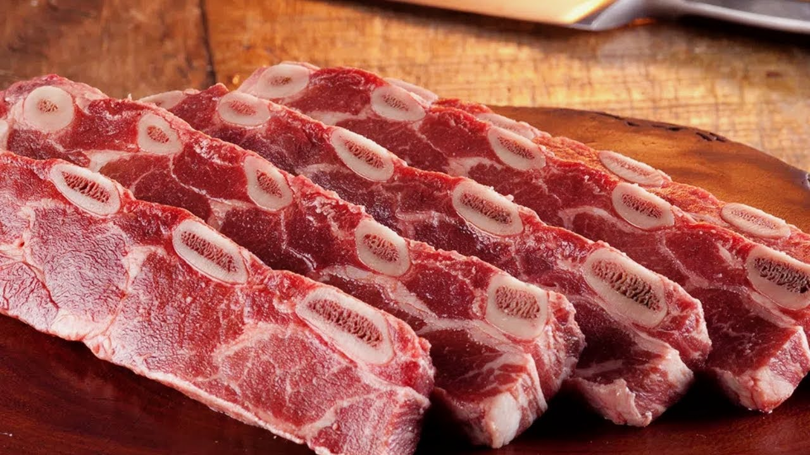

Mapa CarneCerta
Costela clássica para churrasco e cozimento lento
A costela é um corte marcante, muito apreciado por seu sabor intenso, textura rica e grande presença em grelha e assados.

Ideal para • churrasco • assado • grelha
Sabor
5/5
Intenso
Suculência
4/5
Alta
Versatilidade
4/5
Excelente
Abrir recomendador inteligente
Costela
Um corte tradicional e muito querido, com sabor marcante e excelente resposta em preparos longos e em fogo direto.
A costela combina bem com fogo indireto, assados lentos e grelha, entregando uma textura suculenta e forte identidade de sabor.
Assado
Churrasco
Fogo indireto
4.8
Favorita para churrasco
Perfeita para quem quer um corte com presença, sabor profundo e resultado muito especial em assados e grelhas.
Ideal para
Dica do açougueiro IA
Para realçar o sabor, cozinhe devagar e deixe a gordura derreter aos poucos antes de finalizar a superfície.